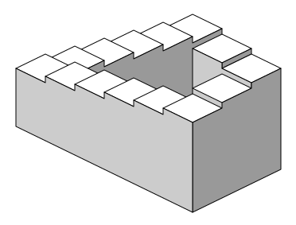

Research article
The 4D UX Scorecard


Delight, Doability, Desire, Dependability
A practical and executive-facing UX metric framework grounded in Compassion’s mission and the research team’s rapid, iterative culture.
🧠 Pillar 1: Behavioral → Doability
“Can users actually do the thing we built?”
Scroll horizontally to view all columns.
| Metric | Description | Tools/Scale | Notes |
|---|---|---|---|
| ✅ Task Success Rate | % of users completing core tasks | Task metrics (RITE, moderated studies) | Measures usability of workflows |
| ⏱️ Time on Task | How long core actions take | Stopwatch/Tool logs | Lower = more efficient |
| ❌ Error Rate | # of errors per user or session | Observation + self-report | Qualifies common usability blockers |
| ❓ Assist Requests | # of clarifications users need | Observer count | High = unclear UX |
| 📈 DAU/MAU | Daily/Monthly active usage | Mixpanel | Behavior-level retention |
💬 Pillar 2: Attitudinal → Dependability
“Do users feel like this is reliable, usable, and good enough to recommend?”
Scroll horizontally to view all columns.
| Metric | Description | Tools/Scale | Notes |
|---|---|---|---|
| 📋 System Usability Scale (SUS) | Standard 10-item usability scale | SUS | Use post-training/onboarding |
| 🌟 CSAT (Customer Satisfaction) | 1–7 scale of satisfaction | Post-task or post-session | Good pulse metric |
| 📣 Net Promoter Score (NPS) | “Would you recommend…” | 11-point scale | Adoption + trust proxy |
| ✔️ Workflow Completion | % completing full user journey | Survey + logs | Useful for FCPs and Supporters |
| 🗣️ Confidence Ratings | Likert agreement with “I can use this easily” | Included in SUS/UMUX | Add into onboarding surveys |
❤️ Pillar 3: Emotional → Delight
“How do people feel when using the experience?”
Scroll horizontally to view all columns.
| Metric | Description | Tools/Scale | Notes |
|---|---|---|---|
| 🙂 Emotion Smiley Scale | Mood or affect after task or session | Visual analog or text-based | Keep lightweight and quick |
| 🧠 Feeling Scale (Words) | Adjective choices (e.g., “frustrated,” “excited”) | 5–7 point word matrix | Captures nuance |
| 🧾 Open-Ended Comments | Qualitative feedback | Moderated/Surveys | Look for recurring themes |
| 🎨 Appearance Trust Score | Perceived trustworthiness from UI | SUPR-Q (Trust, Appearance) | Mid-cycle benchmark |
| 🎤 Spontaneous Reactions | Noted by facilitator during test | RITE-style observation | Highlights visceral response |
🔁 Pillar 4: Adoption → Desire
“Will they come back? Will they keep using it?”
Scroll horizontally to view all columns.
| Metric | Description | Tools/Scale | Notes |
|---|---|---|---|
| 🔁 Repeat Logins | How often users return | Mixpanel | Signal of habit |
| ❤️ Likelihood to Reuse | Self-reported | UMUX-Lite or 1–10 scale | Combine with CSAT |
| 🔄 Willingness to Recommend | NPS, plus “Why/why not” | SUPR-Q, NPS | Use in honeymoon recheck |
| 💡 Feature Recall | % recalling core features in follow-up | Survey | Cognitive adoption |
| 💬 What Made You Come Back? | Direct attribution | Survey or focus group | Qual insight into retention triggers |
📘 Where to Use This?
This framework can be deployed across all Community platform phases:
| Phase | Tools | Buckets Measured |
|---|---|---|
| Training | SUS + Learnability survey | Doability, Dependability |
| First 2 Weeks | UMUX-Lite, Emotion scale | Delight, Desire |
| End of Month 1 | CSAT + NPS + Comments | Delight, Dependability |
| Recheck (Month 2) | SUPR-Q | All Four |
| Live Usage | Mixpanel Events + DAU/MAU | Doability, Desire |
🧲 Exec Summary: Why “4D UX Scorecard” Matters
- Delight: Proves we’re delivering emotionally rewarding experiences.
- Doability: Shows if the app works at the ground level (tasks, flows).
- Desire: Measures the likelihood of future use and word-of-mouth growth.
- Dependability: Validates perceived trust, usability, and long-term support.